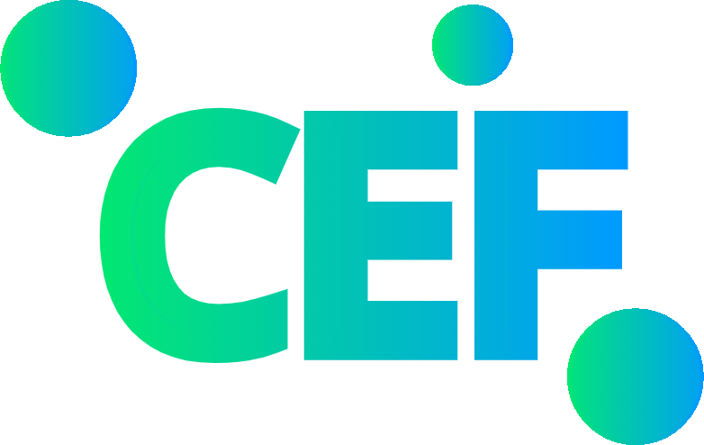

<a class="neonText" style="color: white; font-size:27.8px; font-family: Roboto;" href="https://github.com/chemplexity/molecules" target="_blank"><div style="color: white; text-align: center; font-size: 27.8px; font-family:Roboto"><i class="fab fa-github"></i> Chemplexity & Ghelix2004<br><script>document.write(new Date().getMonth()+1);</script>∑<script>document.write(new Date().getFullYear());</script>+<script>document.write(new Date().getUTCDate());</script><script>document.write("<sup>("+d[new Date().getUTCDate()%10]+")</sup>");</script></div></a>
</article>